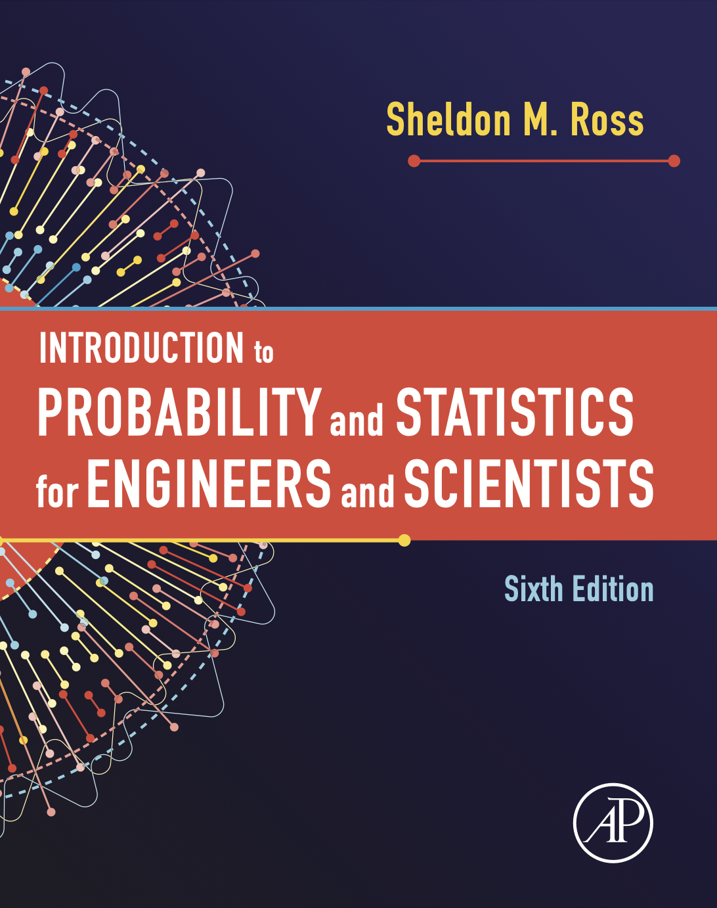

Introduction to Probability and Statistics for Engineers and Scientists（中文版）
欢迎阅读

Introduction to Probability and Statistics for Engineers and Scientists (Sixth Edition) 是一本为工程师和科学家而作的有关概率论和数理统计方面的书籍。
本书的第六版继续展示了如何应用概率论来洞察现实生活中的统计问题。与之前的版本一样，本书精心设计的概率论相关的内容将真实现象的概率模型和其统计程序关联起来，以便读者能够更直观的理解实践工程师和科学家最常用的统计程序和策略。
本书是为工程学、计算机科学、数学、统计学和自然科学专业的学生编写的统计学和概率统计入门课程。当然，科学家、工程师和其他专业人员也可以从本书中找到灵感。
关于书中的各章最后的 习题 部分，可以参见：www.chegg.com/homework-help。
翻译进度
7/16....-..-.-------版权声明
本翻译稿是笔者在阅读原书过程中的笔记，采用“保持署名—非商用”创意共享 4.0 许可证。只要保持署名和非商用，您可以自由地阅读、分享本书。
您可以：
- 下载、保存以及打印本翻译稿
- 网络链接、转载本翻译稿的部分或者全部内容，但是必须在明显处提供读者访问本翻译稿发布网站的链接
您不可以：
- 以任何形式出售本翻译稿的电子版或者打印版
- 擅自印刷、出版本翻译稿
- 以纸媒出版为目的，改写、改编以及摘抄本翻译稿的内容